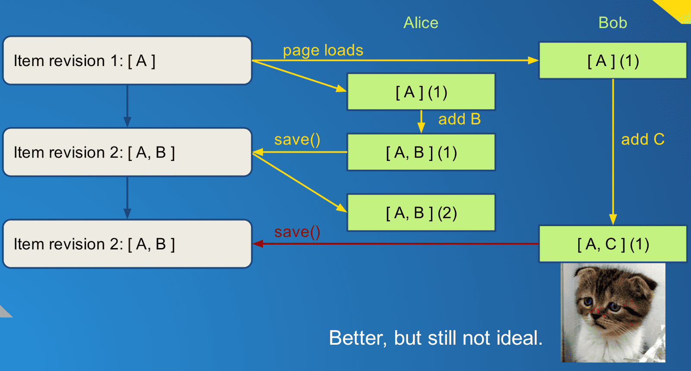

I recently gave a tech talk for the Khan Academy dev team describing the latest iteration of our infrastructure for saving edits from our content editors to the server. While this seems like a simple problem (doesn't Backbone already handle that stuff?) there are complexities when you want to support multiple simultaneous users and make the UI fast and responsive. I think the pattern that we gravitated to is a generally useful one, and this was validated by a recent blog post describing an almost identical solution to the same problems by the Dropbox team1, (they even called it an operation queue!). If you're writing a client-side system for making changes to global state that need to be persisted to a server, this may help you skip some of the less-optimal steps along the path to content syncing nirvana.
Viewing content on Khan Academy (as an admin)
Editing content on Khan Academy
Responsiveness
First, some definitions. What does responsiveness mean in an editing interface?
No save buttons: The user doesn't have to remember to click a button to apply the changes. Once the user toggles the UI to "edit" mode, all the fields are edit-in-place where possible and everything autosaves immediately as soon as you edit it. (There is always some internal opposition to autosave on the grounds of "users expect a Save button", but Google Docs has proven it can be done effectively.)
Instant feedback: If something is wrong we tell the user immediately, rather than returning an error minutes or hours later when they try to publish their changes.
No interruptions: The user can continue working after making changes, without having to wait for the data to get saved to the server. The user should only see a progress bar when they navigate to a different piece of content.
First pass: The Backbone Way
We started migrating over to Backbone as a Javascript framework in early 2012. Backbone's models are a straightforward way to handle synchronizing with the server and listening for property changes, and we are still using them for that purpose. Here is the naive way to implement an editor using Backbone's views and models:
This has some issues:
- Every time the editor calls
save(), it must wait for that save to complete before issuing the command again, since multiple AJAX requests can arrive out-of-order and changes will be lost. - If a save fails for whatever reason, the editor must handle that in every
place that can trigger a
save(). - The model's internal state is only updated either when
save()is called or when the save succeeds and the server state is updated. In either case the UI can be temporarily out of sync with the model state. This makes it unsafe to listen for model changes and update the UI since the user may have unsaved changes.
Second pass: Autosave
To address some of these issues, I designed a new system that would be capable of watching the UI for changes and automatically queuing up those changes to be sent to the server in the background:
This new Autosave component would receive a request to update a field whenever
the UI registered a change, and add it to a queue of attributes to save for the
model. It would encapsulate calling save() on each model that had changes
queued, and be smart about merging attribute changes that were queued to reduce
the number of AJAX calls issued.
For error handling, in order to allow the user to continue working I chose to make the system optimistic and assume that changes being saved would succeed. If there was a validation error, it would be caught by the queue and shown to the user, and the user could clear the error by making further edits that were successfully saved. All this was handled in one place for all editors, and things were pretty good.
Watning: Collision imminent!
The problems begin when we have multiple users editing the same content at the same time, or one user has a tab open for a long time with stale data and then comes back and edits it. This leads to conflicts and data loss.
Here is a simple example, where an item (which in this case just contains a list of children A, B, and C) is edited by both Alice and Bob at the same time:
Alice adds B to the item list that just contained A and saves the new list [ A, B ] to the server. Since Bob's item model is not updated to include the new child B, he sends up his own list with just A and C and now Alice's change has been reverted without either Alice nor Bob being notified.
Now, we could require Bob's Autosave component to automatically fetch the latest version of the item before overwriting it, but that would neither be transactionally secure (because it would require multiple AJAX calls, and Alice could have made her changes in between those) nor would it be straightforward to do the merge: Bob has children A & C and the server has A & B, and now we have to write some sort of client-side merge algorithm. And, as stated before, we cannot easily update Bob's UI once we've received changes from the server, since that might erase changes he has made that have not been saved!
Barring a complete rewrite, the first step is to detect when Bob is about to
overwrite Alice's changes. It just so happens that we create a unique revision
ID after each edit, which is stored with the item, and the client is aware of
what revision ID it has for each piece of content. So when the save() is
issued, the revision ID that is sent up is the latest revision the client got
before the changes being saved. The server can easily compare this revision to
the latest one it has, and return an error if they do not match:

Now when Bob sends up his change to the item, he includes in the JSON representation the ID that he thinks is current, in this case it's revision 1. The server looks at the latest revision - Alice's - and see's it's revision 2, and returns a special HTTP status code: 409/Conflict. This doesn't make Bob especially happy, since he knows his changes cannot be saved. At this point he has to reload the page and make his changes again. But the key improvement is that someone is made aware that data is lost, and since it's the person who just made the change it is easy enough for him to redo his work.
Ideal? No, not really. But the correct solution requires a bit bigger change.
OperationQueue
At this point I had to give up the band-aid solutions and look at a bigger change. What we want is to be able to pull down the latest version and play back Bob's changes on top of Alice's so that no work is lost. So rather than storing the attribute values directly, we create an "operation" - a function + data - that can be applied to a model at any point to make the desired change.
It's a subtle change:
For most fields like "title" the operation will be (setAttribute, {title: X}),
or "set 'title' to 'X'" with 'title' and 'X' being stored in the operation's
data and setAttribute being a generic function. But for adding or removing
items from a list, we would store the child being added/removed and the index,
rather than the actual list.
This is how the conflict plays out now:
Now Alice and Bob no longer enqueue changes to the child list directly, but rather enqueue two operations: (addChild, "B") and (addChild, "C"). Alice's operation runs first and adds B to [ A ] to make [ A, B ], and saves. Bob adds C to [ A ] to make [ A, C ] but his save fails immediately. The client then fetches Alice's new version [ A, B ], and replays the failed operation on top of it to make [ A, B, C ] and attempts to save again. this one succeeds, and now both Alice and Bob's changes have been saved. No one has lost any work!
Now, since we've updated the model during the course of the save, Bob has to be shown the new values in case he wants to make further changes. This was a problem before since Bob could already have made more changes and queued them up to be saved, and we don't want to revert them in the UI during a refresh. Luckily, having those changes as operations means we can now calculate what the UI should look like any given moment by taking the model state (which corresponds to the latest server state) and applying any operations in the queue that have not yet been saved. This is what the getUIAttributes() method does in the above diagram. This gives Bob a consistent view with all the changes he's made even though the model underneath is always in sync with the server:
Even though the UI has been refreshed when the item was reloaded from the server, Bob's changes remain.
It is important to understand that we only get as much protection from data loss as the operations are constructed to give - adding children is safe but if two users change the title of an item in different ways the first one will still be overwritten unless the operation does something smarter internally (like a text diff). Check boxes, combo boxes, and numeric fields cannot be merged and will always overwrite other changes. The best way to deal with this is to synchronize changes between all clients as soon as changes are made on the server, and at least we have a refresh path on the client that makes that fairly easy.
Conclusion
If you want to give this system a try yourself, feel free to check out the source code2 and use it in your own projects. It's fairly well documented and should be really easy to get up and running. Let me know how it works for you!
So far it seems like the saving infrastructure outlined here is pretty close to the ideal one for handling multiple users editing structured data asynchronously. We've had fewer reports of lost data and productivity among our content creators continues to increase as the tools get better. Now we can focus on making the editors themselves more intuitive and user-friendly. As we like to say at Khan Academy: Onward!